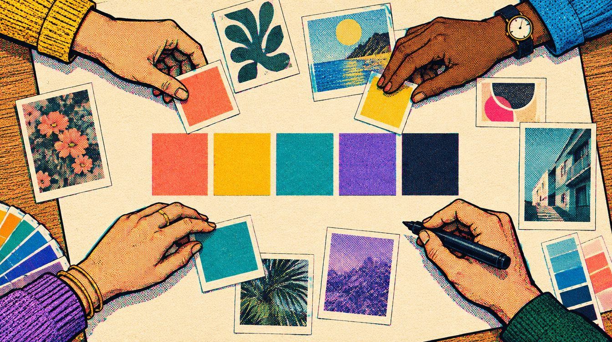

12:06 to 12:45 · 39 protected minutes
Your team,
your board.
The team you formed, the board you have been building together. This time is protected: nothing else in class takes it.
Mood-board file: Thursday, October 1, 5 PM Pacific.
Presentation: Monday, October 5, five minutes, everyone on the team speaks.
Step by step
- 12:06Sit with your team and open your boardYour team's own shared file, the real one. Not a description of it, not a new copy.
- 12:06 to 12:45Professor Bellamy visits each team, about ten minutes eachFour teams, visits at about 12:06, 12:16, 12:26 and 12:36. Keep working until he gets to you.
- When he arrivesAnswer three things, in order1. Say your palette out loud: five colors, by name. 2. Show the one image you cannot justify, and park it. 3. Name what is missing. For a game it is usually the screen: HUD, camera, split view, a level seen from above.
- Before 12:45Agree one thing that will be true by Wednesday, and who does itWrite it in My notes under Team time. Save your board.

Bring today into it
Does your board show how things move, or only how they look? One reference for motion, a frame rate, or a style a character owns is worth three more pretty stills.
See what a 5 looks like
How it is graded
Visual Cohesion · 5 points
Does the board communicate one aesthetic direction?
Curation & Justification · 5 points
Can you explain why each image belongs?
Color & Palette Development · 5 points
Does the palette support the game's idea?
Presentation & Accessibility · 5 points
Can another person read and navigate the board?
The finished assignment
20 to 40 images. File due Thursday October 1, 5 PM Pacific. Five-minute presentation Monday October 5, everyone speaks. Submit through the established course Drive location.
This page does not upload images or change your board. Your board stays in your team's own file.